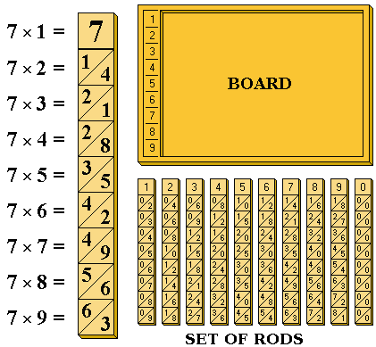
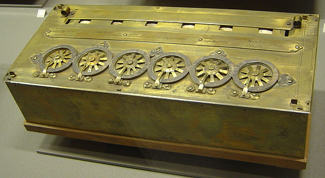
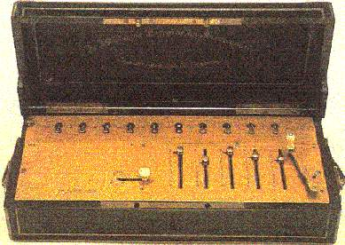

Napier Bones was one of the many inventions in the renaissance era to exponentially increase mathematical calculations. Napier Bones were an abacus-like device that used logarithms to simplify the calculation of multiplication and division. This device was invented by a Scottish mathematician named John Napier. The device had 9 rows, each representing the corresponding number (1-9). This device works by aligning each number with each corresponding row, then adding the 2 numbers that are within a slanted section of the column to make a digit.
The abacus is a similar device in a practical way. This device’s first surface was in the first civilization of Mesopotamia in 3000BC. Though, this is not the only time it had made an appearance. This device has been made several different ways using several different materials and read in many different ways. It had appeared in Egypt, Persia, Russia, Greece, China, Japan, Korea, India, and even pre-colonial America. The device was for simple addition and subtraction. The use of the abacus was simple, 1 bead was equal to 1 number and a larger bead was equal to another number, whether it be 5 or 10, and each would be moved over, left or right, to represent a number.
In 1642, a man named Blaise Pascal began his work in an old concept that had been discontinued by his predecessor, Wilhelm Schickard. Wilhelm used Napier’s Rods as part of his concept, but was overburdened with grief when his work was destroyed in a fire. After 3 years and 50 prototypes, Pascal came out with a final product. He built 20 of these, called Pascal’s Calculator. Over the years, only 9 remain and the whereabouts of the other 11 are unknown. His motivation was helping his father in completing his work as a supervisor of taxes in Rouen. This machine made adding, subtracting, multiplying, and dividing easier. The contraption worked by spinning cogs that ticked 9 times before clicking the next cog over by 1.
Later, in 19th century France, a mathematician named Thomas De Colmar began the exploration of better calculation methods. He made a breakthrough in the 1810’s and later patented his invention in 1820. His invention was manufactured for over half a century, starting in 1841, before more entrepreneurs came along. His invention was called the Arithmomenter. It was the first commercially successful mechanical calculator and millions were manufactured and sold around the world. The machine was so durable and accurate that it was used up to WWII. His deign used the principals indigenous to Pascal’s Calculator, originating a couple hundred years before Colmar.
In 1967, Texas Instruments was the first to invent a hand-held calculator. Before this major breakthrough, calculators were the size of present-day printers. It took two years to develop the hand-held, battery powered calculator after the idea was put on the table. These calculators used integrated circuits, which were very new at the time. They were very expensive and people preferred to stay with the technology they knew was reliable and worked, which was the old mechanical calculators. The only ones that used the new integrated circuit (IC) technology were defense companies because they could afford it and they needed the space they saved using IC. TI changed the public perspective on IC, bringing in new customers and innovators.